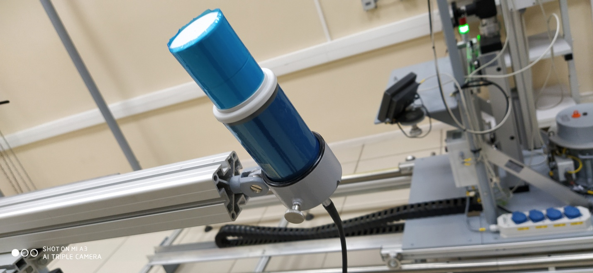
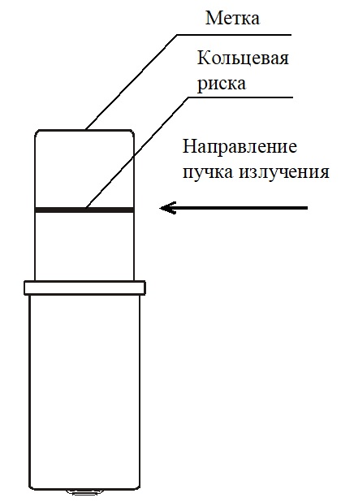
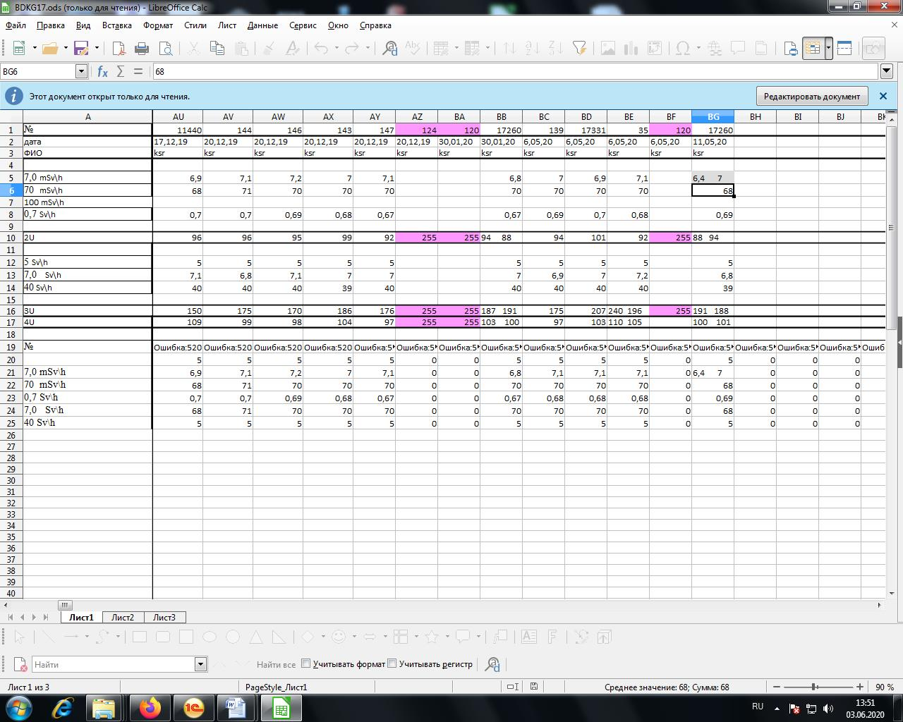

includeMenu("menu_left", REG_MENU, OPEN);
↑
Главная
Градуировка БДКГ-17
Градуировка БДКГ-17
Установить блок детектирования на УДГ-АТ130 таким образом, чтобы они расположились перпендикулярно оси излучения, ось пересекала через кольцевые риски, а расстояние от источника до центра детектора было выставлено по центру блоков
 
Подключить к ПК
Запустить ПО DU
Calibration
Нажать
Поиск
Запустить калибровку 2-х диапазонах
Выставить точки 1 диап 100 м и 5 Зв/ч
Выставить точки 2 диап 5 Зв и 40 Зв/ч
Снять ПСИ
Данные переписать в журнал градуировки
